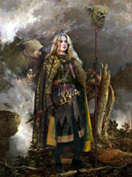

Альви, у скандинавській міфології нижчі природні духи. Спочатку альви уособлювали собою душі померлих, але поступово їх роль в ієрархії божественних істот зазнала змін.
У ранній скандинавсько-германської міфології альви - нестаріюча, що володіє магією, прекрасна раса, яка живе як і люди, або на Землі, або в світі альвов (ельфів), який також описувався існуючим цілком реально. Таке уявлення про Альва, частково зберігшись, дійшло до часів середньовіччя, залишившись назавжди в мовах, іменах, культурі і генеалогії європейських країн.
У більш пізніх міфах альви представлені в якості духів землі і родючості. Існував особливий ритуал вшанування цих духів. Слово «Альва» (ельф) в цей період стало узагальнювати по суті зовсім різних істот - власне, Альва і дварфов (темних альвов).
Альви стали мати деякі подібні риси як з карликами-цверги, так і з ванами. У «Старшій Едді» є згадки про чудове коваля Велунд, якого називали князем альвов.
У «Молодшій Едді» згадується поділ на темних (що живуть під землею) і світлих альвов (що живуть в небесному чертозі). У пізніх германо-скандинавських сагах про створення світу говориться, що альви були створені першими асами (Одином, Вілі і Ве) з черв'яків, які з'явилися в м'ясі Имира. Світлим Альва (ельфам) було віддано царство Альвхейм, темним Альва (дварфов і гномам) - царство Свартальфахейм, а карликам-цверг земля Нідавеллір.
Ельфів представляли як антропоморфних істот невеликого зростання, спритних і перевірених, з довгими руками і короткими ніжками. Їх заняття визначалися насамперед місцем їх проживання. Живучи в горах альви вважалися прекрасними зброярами і ковалями; а альви, що селилися біля води, були чудовими музикантами. Взагалі, всі ці істоти дуже любили музику і танці.
За переказами, альви-ельфи представляли собою цілий міфічний народ, з поділом на багатих і бідних. Вони могли бути добрими і злими. Як і люди, вони були різностатеві і могли народжувати дітей. Існують перекази про шлюби, укладені між ельфами і людьми. Як всякі духи, ельфи (світлі Альви) вважалися наділеними чималими надприродними здібностями.
Список альвів в «Молодшій Едді»
Світлі Альви (ельфи) - вправні ковалі, чарівники і музиканти.
Велунд - повелитель альвов, прекрасний коваль.
Бейла, Біггвір, Дёккалфар, Сварталфар - чарівники і співаки.
Темні альви (дварфи) - також вправні ковалі і чаклуни.
Хрейдмар - чаклун, якому в якості викупу за вбивство сина
боги-аси передали скарби Нібелунгів, прокляті цверг Андварі.
Сини Хрейдмар - ОТР, Регин, Фафнір.
Гендалф - маг і чаклун.
Відфін - гном, який відправив своїх синів добути
мед з медового джерела мудрості Міміра.
Сини Відфіна - Бив, Хьюк.